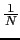

Next: Use of the Beamformed Up: Acoustic Beamforming Experiments Previous: TDOA Post-Processing Analysis Contents
The signal output module includes the relative channel weight estimation algorithm (explained in 5.2.4) and the elimination of frames from low quality channels (seen in 5.2.4).
The relative channel weight algorithm is necessary when the different microphones are of very diverse type and therefore the levels and kinds of noises being recorded are different. In such cases the standard delay-and-sum theory does not apply as the noise from the different channels cannot cancel itself out. One needs to find the appropriate weights of each of the channels that is able to reduce the effect of a channel when the quality of the signal is poor and magnify it when it is very good. In the RT06s system the relative weights are computed once the channel delays are known, and is a function of the average correlation between the signal of all channels.
The elimination of certain channels when their quality is too low uses also the correlation information to determine when a channel in a particular frame is of too low quality that it is better not to use it in the output as it would degrade the output quality. This is done automatically and in a dynamic way (only certain frames are eliminated, not all the data in that recording). Table 6.11 shows the results comparing the RT06s system with the same without the use of the relative channels weighting and the automatic channels elimination algorithms. When no channel weights are used, a  constant weight is applied to all channels.
The SNR of the development set improves when not using either one of the techniques, but gets worse in the test set. The DER improves a 1.8% relative by using the relative channel weights on the development set and a 4.7% relative on the evaluation set. By eliminating the bad channels from the processing the DER does not change in the development set but is improves a 4.1% relative in the evaluation set.